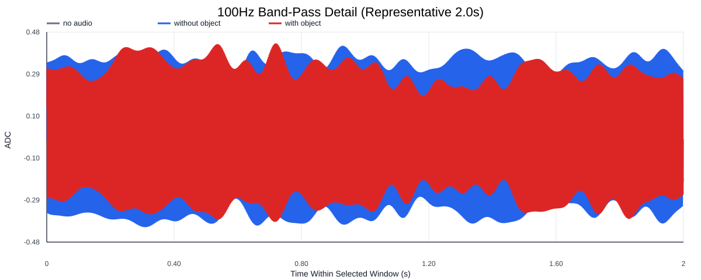
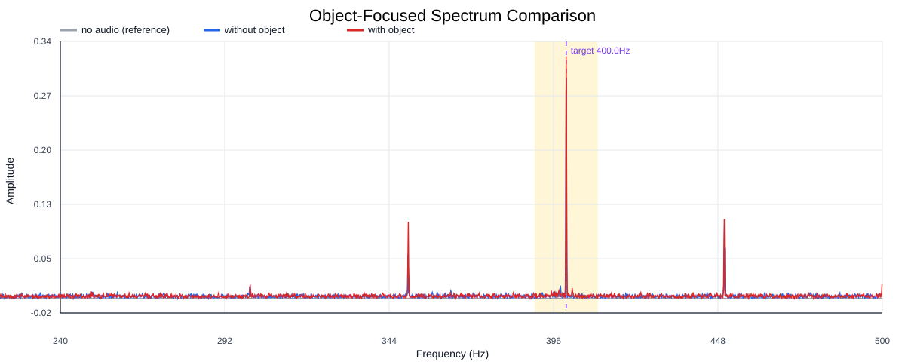
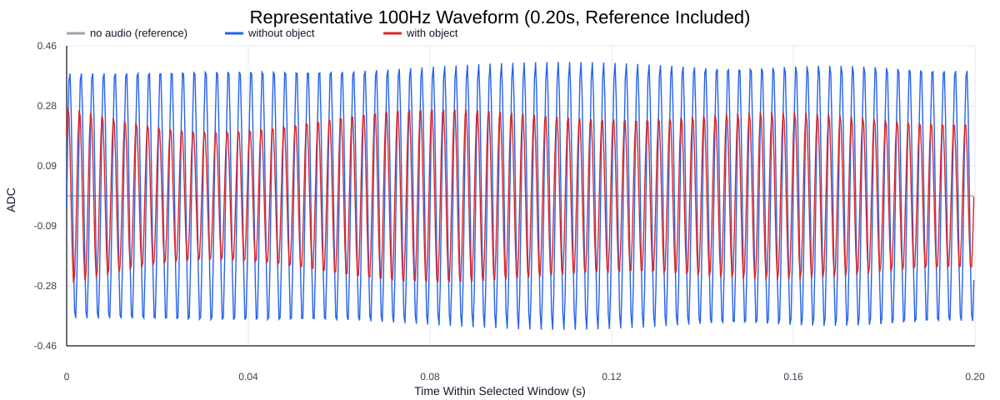
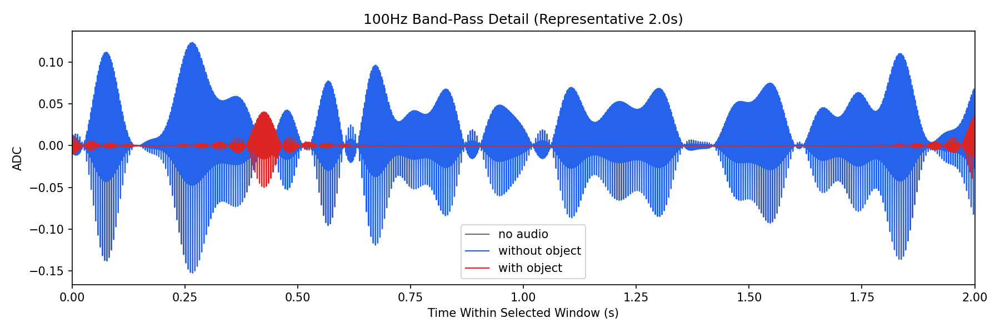
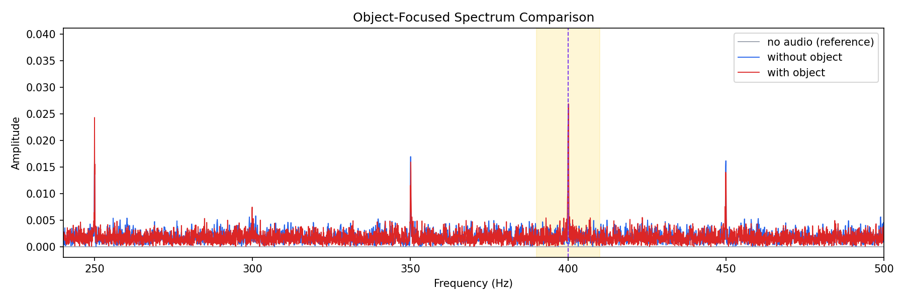
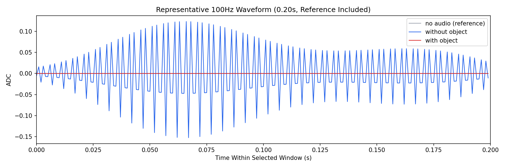

Background: F:\项目类文件夹\异物检测4.10\Data_Dual\frequency_sweep\0400Hz\repeat_01\raw\no_audio.csv
Without object: F:\项目类文件夹\异物检测4.10\Data_Dual\frequency_sweep\0400Hz\repeat_01\raw\without_object.csv
With object: F:\项目类文件夹\异物检测4.10\Data_Dual\frequency_sweep\0400Hz\repeat_01\raw\with_object.csv
| Metric | 无音频 | 100Hz无异物 | 100Hz有异物 | 无异物/无音频 | 有异物/无异物 | 有异物/无音频 |
|---|---|---|---|---|---|---|
| centered_rms | 0.000000 | 0.094856 | 0.139751 | inf | 1.4733 | inf |
| raw_target_amp | 0.000000 | 0.025467 | 0.012319 | inf | 0.4837 | inf |
| filtered_rms | 0.000000 | 0.025315 | 0.039613 | inf | 1.5648 | inf |
| filtered_target_amp | 0.000000 | 0.025467 | 0.012319 | inf | 0.4837 | inf |
| filtered_energy_ratio | 0.000000 | 0.071225 | 0.080345 | inf | 1.1280 | inf |
| window_filtered_target_amp_mean | 0.000000 | 0.018038 | 0.030689 | inf | 1.7013 | inf |
| window_filtered_target_amp_std | 0.000000 | 0.019547 | 0.031051 | inf | 1.5886 | inf |





